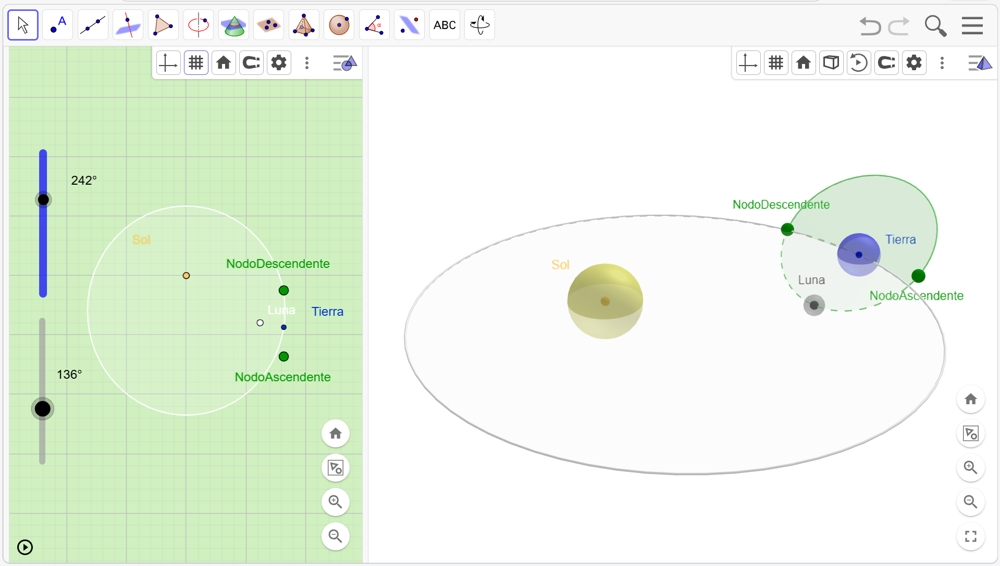

EXPLORACIÓN DE LA CAPA 3 DEL MODELO:
Desactiva todos los elementos de la Capa 2.
A estas alturas ya habrás notado que el disco verde (que representa el plano de la órbita de la Luna) está siempre presente, pero... ¿te has fijado en que está un poco “torcido”?
En la Capa 3 activa los elementos: Nodo Ascendente y Descendente.

Debido a la inclinación de la órbita de la Luna alrededor de la Tierra respecto a la órbita de la Tierra alrededor del Sol, la mayoría de los meses la Luna pasa “por encima” o “por debajo” de la línea visual entre la Tierra y el Sol. Por eso, aunque tengamos Luna Nueva cada mes, la sombra de la Luna no llega a la superficie de la Tierra.
Fíjate en los dos puntos verdes donde corta la trayectoria de la Luna con la trayectoria de la Tierra:
• El Nodo Ascendente: El lugar de intersección de las órbitas de la Luna y de la Tierra en el lugar en el que la Luna asciende en su trayectoria (por encima del plano Sol-Tierra)
• El Nodo Descendente: El lugar de corte de las órbitas de la Luna y de la Tierra en el lugar en el que la Luna desciende en su trayectoria (por debajo del plano Sol-Tierra)
Teniendo esto en cuenta intenta realizar o responder las siguientes cuestiones:
1. Mueve los deslizadores hasta que la Luna se encuentre en uno de los Nodos (ascendente o descendente)
2. Mueve los deslizadores hasta que el Sol y la Tierra estén alineados
Solo en ese preciso momento, cuando la Luna “cruza” el nivel de la órbita terrestre, es posible que proyecte su sombra sobre nosotros.
3. Si la órbita de la Luna fuera perfectamente plana y estuviera alineada con la de la Tierra, ¿cuántos eclipses de Sol crees que veríamos al año?